CODING AGENTS AS PIXEL WORLD MODELS
traex/DeepSeek-V4.1-Flash · 0049
点击播放 · 原生 RGB 像素
逐轮保存的候选
回放视频、检查图与代码变化。
每份候选均可单独播放。实际图片检查记录在下方工具轨迹中。
候选 01播放与检查图
点击播放 · 原生 RGB 像素

展开代码变化
--- 上一保存版本
+++ 本次保存版本
@@ -0,0 +1,305 @@
+from pathlib import Path
+import math
+
+import cv2
+import numpy as np
+from PIL import Image
+
+import artifact_io
+
+
+CASE_DIR = Path(__file__).resolve().parent
+WIDTH, HEIGHT = 256, 144
+FRAME_COUNT = 20
+FPS = 4
+SS = 4
+
+
+def smoothstep(value):
+ value = float(np.clip(value, 0.0, 1.0))
+ return value * value * (3.0 - 2.0 * value)
+
+
+def polygon_mask(shape, points, scale=1, blur=0.0):
+ height, width = shape[:2]
+ mask = np.zeros((height * scale, width * scale), np.uint8)
+ pts = np.rint(np.asarray(points, np.float32) * scale).astype(np.int32)
+ cv2.fillPoly(mask, [pts], 255, lineType=cv2.LINE_AA)
+ if blur > 0:
+ sigma = blur * scale
+ mask = cv2.GaussianBlur(mask, (0, 0), sigma)
+ if scale != 1:
+ mask = cv2.resize(mask, (width, height), interpolation=cv2.INTER_AREA)
+ return mask.astype(np.float32) / 255.0
+
+
+def build_clean_plate(source):
+ object_polygons = [
+ [(177, 35), (188, 35), (188, 64), (177, 64)],
+ [(162, 41), (173, 41), (173, 70), (162, 70)],
+ [(162, 58), (175, 58), (175, 82), (162, 82)],
+ [(127, 51), (138, 51), (138, 78), (127, 78)],
+ [(108, 55), (119, 55), (119, 82), (108, 82)],
+ [(86, 56), (98, 56), (98, 87), (86, 87)],
+ [(66, 62), (79, 62), (79, 91), (66, 91)],
+ ]
+ mask = np.zeros((HEIGHT, WIDTH), np.uint8)
+ for points in object_polygons:
+ pts = np.asarray(points, np.int32)
+ cv2.fillPoly(mask, [pts], 255)
+
+ # Remove the arm, crossbar, and hub while retaining the platform body.
+ pivot = np.array([180.5, 29.2])
+ tip = np.array([191.7, 46.0])
+ for y in range(25, 49):
+ for x in range(174, 197):
+ point = np.array([x + 0.5, y + 0.5])
+ segment = tip - pivot
+ u = np.clip(np.dot(point - pivot, segment) / np.dot(segment, segment), 0, 1)
+ distance = np.linalg.norm(point - (pivot + u * segment))
+ in_crossbar = 181 <= x <= 194 and 31 <= y <= 42
+ in_hub = np.linalg.norm(point - pivot) <= 4.2
+ if distance <= 2.5 or in_crossbar or in_hub:
+ mask[y, x] = 255
+
+ mask = cv2.dilate(mask, np.ones((3, 3), np.uint8), iterations=1)
+ return cv2.inpaint(source, mask, 3, cv2.INPAINT_TELEA)
+
+
+def extract_sprite(source, bbox, polygon, base):
+ x0, y0, x1, y1 = bbox
+ rgb = source[y0:y1 + 1, x0:x1 + 1].copy()
+ local_points = [(x - x0, y - y0) for x, y in polygon]
+ alpha = polygon_mask(rgb.shape, local_points, scale=4, blur=0.35)
+ local_base = (base[0] - x0, base[1] - y0)
+ return {"rgb": rgb, "alpha": alpha, "base": local_base}
+
+
+def make_sprites(source):
+ specs = {
+ "back_white": (
+ (176, 34, 189, 65),
+ [(177, 35), (188, 35), (188, 64), (177, 64)],
+ (182.5, 64.0),
+ ),
+ "back_black": (
+ (161, 40, 174, 71),
+ [(162, 41), (173, 41), (173, 70), (162, 70)],
+ (167.5, 69.5),
+ ),
+ "front_black_1": (
+ (161, 57, 176, 83),
+ [(162, 58), (175, 58), (175, 82), (162, 82)],
+ (168.5, 81.5),
+ ),
+ "front_white_1": (
+ (126, 50, 139, 79),
+ [(127, 51), (138, 51), (138, 78), (127, 78)],
+ (132.5, 77.5),
+ ),
+ "front_black_2": (
+ (107, 54, 120, 83),
+ [(108, 55), (119, 55), (119, 82), (108, 82)],
+ (113.5, 81.5),
+ ),
+ "front_white_2": (
+ (85, 55, 99, 88),
+ [(86, 56), (98, 56), (98, 87), (86, 87)],
+ (92.0, 86.5),
+ ),
+ "front_black_3": (
+ (65, 61, 80, 92),
+ [(66, 62), (79, 62), (79, 91), (66, 91)],
+ (72.5, 90.5),
+ ),
+ }
+ return {
+ name: extract_sprite(source, bbox, polygon, base)
+ for name, (bbox, polygon, base) in specs.items()
+ }
+
+
+def fall_angle(time_value, start, duration, end_angle=1.47):
+ if time_value <= start:
+ return 0.0
+ u = (time_value - start) / duration
+ if u < 1.0:
+ return end_angle * (u ** 1.55)
+ if u < 1.18:
+ bounce = math.sin(math.pi * (u - 1.0) / 0.18)
+ return end_angle + 0.045 * bounce
+ return end_angle
+
+
+def stick_angle(time_value):
+ main = math.radians(55.0 + 65.0 * smoothstep(time_value / 0.88))
+ if time_value > 0.88:
+ rebound = 0.09 * math.exp(-(time_value - 0.88) * 4.0)
+ rebound *= math.sin((time_value - 0.88) * 11.0)
+ main -= rebound
+ return main
+
+
+def blend_layer(frame, rgb, alpha):
+ alpha = np.clip(alpha, 0.0, 1.0)[..., None]
+ return frame * (1.0 - alpha) + rgb * alpha
+
+
+def render_shadow(frame, sprite, angle, scale=1.0):
+ height, width = frame.shape[:2]
+ base_x, base_y = sprite["base"]
+ shift_x = 1.2 + 5.0 * math.sin(angle) * scale
+ shift_y = 2.0 + 1.0 * math.sin(angle) * scale
+ center = (int(round(base_x - shift_x + width / 2.0)), int(round(base_y - shift_y + height / 2.0)))
+ extent = int(round((sprite["rgb"].shape[1] * (1.0 + 0.35 * math.sin(angle))) / 2))
+ extent = max(extent, 2)
+ shadow = np.zeros_like(frame)
+ cv2.ellipse(
+ shadow,
+ (int(round(base_x - 3.5 * math.sin(angle))), int(round(base_y - 0.7))),
+ (extent + 2, 2),
+ 0,
+ 0,
+ 360,
+ (8, 9, 7),
+ -1,
+ lineType=cv2.LINE_AA,
+ )
+ shadow = cv2.GaussianBlur(shadow, (0, 0), 1.1)
+ return frame * 0.86 + shadow * 0.14
+
+
+def warp_sprite(sprite, angle):
+ sprite_height, sprite_width = sprite["alpha"].shape
+ big_w, big_h = WIDTH * SS, HEIGHT * SS
+ rgba = np.dstack([sprite["rgb"].astype(np.float32), sprite["alpha"][..., None] * 255.0])
+ rgba = cv2.resize(rgba, (sprite_width * SS, sprite_height * SS), interpolation=cv2.INTER_CUBIC)
+
+ base_x, base_y = sprite["base"]
+ cosine, sine = math.cos(angle), math.sin(angle)
+ matrix = np.array(
+ [
+ [SS * cosine, SS * sine, SS * (base_x - cosine * base_x - sine * base_y)],
+ [-SS * sine, SS * cosine, SS * (base_y + sine * base_x - cosine * base_y)],
+ ],
+ np.float32,
+ )
+ warped = cv2.warpAffine(
+ rgba,
+ matrix,
+ (big_w, big_h),
+ flags=cv2.INTER_LINEAR,
+ borderMode=cv2.BORDER_CONSTANT,
+ borderValue=(0, 0, 0, 0),
+ )
+ warped = cv2.resize(warped, (WIDTH, HEIGHT), interpolation=cv2.INTER_AREA)
+ alpha = warped[..., 3] / 255.0
+ rgb = warped[..., :3]
+ return rgb, alpha
+
+
+def draw_stick(frame, angle):
+ layer = np.zeros((HEIGHT * SS, WIDTH * SS, 4), np.float32)
+ pivot = np.array([180.5, 29.2], np.float32) * SS
+ length = 22.3 * SS
+ direction = np.array([math.cos(angle), math.sin(angle)], np.float32)
+ perpendicular = np.array([-direction[1], direction[0]], np.float32)
+ tip = pivot + direction * length
+
+ shadow_offset = np.array([1.4, 1.2], np.float32) * SS
+ cv2.line(
+ layer,
+ tuple(np.rint(pivot + shadow_offset).astype(int)),
+ tuple(np.rint(tip + shadow_offset).astype(int)),
+ (7, 8, 6, 95),
+ int(3.5 * SS),
+ cv2.LINE_AA,
+ )
+
+ cv2.line(layer, tuple(np.rint(pivot).astype(int)), tuple(np.rint(tip).astype(int)),
+ (38, 29, 18, 255), int(3.3 * SS), cv2.LINE_AA)
+ cv2.line(layer, tuple(np.rint(pivot).astype(int)), tuple(np.rint(tip).astype(int)),
+ (139, 105, 57, 255), int(2.1 * SS), cv2.LINE_AA)
+ highlight_a = pivot + perpendicular * 0.45 * SS
+ highlight_b = tip + perpendicular * 0.45 * SS
+ cv2.line(layer, tuple(np.rint(highlight_a).astype(int)), tuple(np.rint(highlight_b).astype(int)),
+ (194, 158, 94, 255), max(1, int(0.65 * SS)), cv2.LINE_AA)
+
+ cross_center = pivot + direction * 11.3 * SS
+ half_long = 4.6 * SS
+ half_short = 2.2 * SS
+ bar = np.array(
+ [
+ cross_center - perpendicular * half_long - direction * half_short,
+ cross_center + perpendicular * half_long - direction * half_short,
+ cross_center + perpendicular * half_long + direction * half_short,
+ cross_center - perpendicular * half_long + direction * half_short,
+ ],
+ np.int32,
+ )
+ cv2.fillPoly(layer, [bar], (18, 94, 28, 255), lineType=cv2.LINE_AA)
+ bar_highlight = bar.copy()
+ bar_highlight[:, 1] -= max(1, int(0.55 * SS))
+ cv2.fillPoly(layer, [bar_highlight], (58, 164, 48, 210), lineType=cv2.LINE_AA)
+ cv2.circle(layer, tuple(np.rint(pivot).astype(int)), int(2.7 * SS), (18, 94, 28, 255), -1, cv2.LINE_AA)
+ cv2.circle(layer, tuple(np.rint(pivot - direction * 0.35 * SS).astype(int)),
+ int(1.2 * SS), (74, 169, 57, 255), -1, cv2.LINE_AA)
+
+ layer = cv2.resize(layer, (WIDTH, HEIGHT), interpolation=cv2.INTER_AREA)
+ alpha = layer[..., 3] / 255.0
+ return blend_layer(frame, layer[..., :3], alpha)
+
+
+def generate_frames():
+ source_image = Image.open(CASE_DIR / "first_frame.png").convert("RGB")
+ source = np.asarray(source_image).copy()
+ plate = build_clean_plate(source)
+ sprites = make_sprites(source)
+
+ draw_order = [
+ "back_black",
+ "back_white",
+ "front_black_1",
+ "front_white_1",
+ "front_black_2",
+ "front_white_2",
+ "front_black_3",
+ ]
+ starts = {
+ "back_white": (0.52, 0.67),
+ "back_black": (1.02, 0.64),
+ "front_black_1": (1.06, 0.66),
+ "front_white_1": (1.66, 0.64),
+ "front_black_2": (2.24, 0.63),
+ "front_white_2": (2.82, 0.63),
+ "front_black_3": (3.39, 0.63),
+ }
+
+ frames = [source.copy()]
+ for frame_index in range(1, FRAME_COUNT):
+ time_value = frame_index / FPS
+ frame = plate.astype(np.float32)
+
+ angles = {
+ name: fall_angle(time_value, *starts[name])
+ for name in draw_order
+ }
+ for name in draw_order:
+ frame = render_shadow(frame, sprites[name], angles[name])
+
+ # The moving arm sits above the platform but below the dominoes.
+ frame = draw_stick(frame, stick_angle(time_value))
+
+ for name in draw_order:
+ rgb, alpha = warp_sprite(sprites[name], angles[name])
+ frame = blend_layer(frame, rgb, alpha)
+
+ frames.append(np.clip(np.rint(frame), 0, 255).astype(np.uint8))
+
+ return np.stack(frames, axis=0)
+
+
+if __name__ == "__main__":
+ output_frames = generate_frames()
+ artifact_io.save(output_frames, CASE_DIR)
+ print(f"saved {output_frames.shape} at {FPS} fps")
可观测工具轨迹
实际执行的命令与返回图片。
命令 1exit 0
/bin/bash -c "pwd && rg --files -g '"'!*.png'"' -g '"'!*.mp4'"' -g '"'!*.webm'"' -g '"'!*.gif'"' | sed -n '1,200p'"
命令 2exit 0
/bin/bash -c "printf '%s\\n' '--- prompt.txt ---'; sed -n '1,240p' prompt.txt; printf '%s\\n' '--- GENERATION_RULES.md ---'; sed -n '1,280p' GENERATION_RULES.md"
命令 3exit 0
/bin/bash -c "find . -maxdepth 2 -type f -printf '%p\\t%k KB\\n' | sort | sed -n '1,240p'"
命令 4exit 0
/bin/bash -c "sed -n '1,260p' artifact_io.py"
命令 5exit 0
/bin/bash -c "sed -n '1,260p' player_template.html"
命令 6exit 127
/bin/bash -c "file first_frame.png && identify -verbose first_frame.png | sed -n '1,100p'"
命令 7exit 0
/bin/bash -c "python - <<'PY'
from PIL import Image
im=Image.open('first_frame.png')
print(im.mode, im.size)
im.crop((45,25,230,115)).resize((925,450), Image.Resampling.NEAREST).save('.tmp/crop_objects.png')
im.resize((1024,576), Image.Resampling.NEAREST).save('.tmp/full_up.png')
PY"命令 8exit 0
/bin/bash -c "python - <<'PY'
from PIL import Image
im=Image.open('first_frame.png')
im.crop((145,20,225,100)).resize((960,960), Image.Resampling.LANCZOS).save('.tmp/platform_big.png')
im.crop((55,35,200,110)).resize((1160,600), Image.Resampling.LANCZOS).save('.tmp/dominoes_big.png')
PY"命令 9exit 0
/bin/bash -c "python - <<'PY' mods=['numpy','PIL','cv2','scipy','skimage'] for m in mods: try: mod=__import__(m); print(m, getattr(mod,'__version__','ok')) except Exception as e: print(m,'MISSING',e) PY"
命令 10exit 0
/bin/bash -c "python - <<'PY'
import cv2, numpy as np
im=cv2.imread('first_frame.png')
# Print representative center and corners of each domino
pts=[(74,71),(72,78),(92,67),(91,76),(114,66),(113,74),(132,62),(131,71),(167,49),(166,56),(181,44),(180,52),(168,64),(167,74)]
for x,y in pts:
b,g,r=im[y,x]
print((x,y), 'RGB', (int(r),int(g),int(b)), 'HSV',tuple(map(int,cv2.cvtColor(np.uint8([[[b,g,r]]]),cv2.COLOR_BGR2HSV)[0,0])))
PY"命令 11exit 0
/bin/bash -c "python - <<'PY'
from PIL import Image, ImageDraw, ImageFont
im=Image.open('first_frame.png').crop((145,20,210,85)).resize((780,780), Image.Resampling.NEAREST)
d=ImageDraw.Draw(im)
for x in range(0,66,5):
X=x*12
d.line((X,0,X,780),fill=(255,0,0),width=1)
d.text((X+2,2),str(x+145),fill=(255,0,0))
for y in range(0,66,5):
Y=y*12
d.line((0,Y,780,Y),fill=(255,0,0),width=1)
d.text((2,Y+2),str(y+20),fill=(255,0,0))
im.save('.tmp/platform_grid.png')
PY"命令 12exit 0
/bin/bash -c "python - <<'PY'
from PIL import Image, ImageDraw
im=Image.open('first_frame.png').crop((45,25,210,115)).resize((1320,720), Image.Resampling.NEAREST)
d=ImageDraw.Draw(im)
for x in range(0,166,10):
X=x*8
d.line((X,0,X,720),fill=(255,0,0),width=1)
d.text((X+2,2),str(x+45),fill=(255,0,0))
for y in range(0,91,10):
Y=y*8
d.line((0,Y,1320,Y),fill=(255,0,0),width=1)
d.text((2,Y+2),str(y+25),fill=(255,0,0))
im.save('.tmp/all_grid.png')
PY"命令 13exit 0
/bin/bash -c "python - <<'PY'
from PIL import Image, ImageDraw
im=Image.open('first_frame.png').resize((1024,576), Image.Resampling.NEAREST)
d=ImageDraw.Draw(im)
for x in range(0,256,5):
X=x*4
d.line((X,0,X,576),fill=(255,0,0),width=1)
if x%10==0:d.text((X+2,2),str(x),fill=(255,0,0))
for y in range(0,144,5):
Y=y*4
d.line((0,Y,1024,Y),fill=(255,0,0),width=1)
if y%10==0:d.text((2,Y+2),str(y),fill=(255,0,0))
im.save('.tmp/full_grid.png')
PY"命令 14exit 0
/bin/bash -c 'python generate.py'
命令 15exit 0
/bin/bash -c "python - <<'PY'
from PIL import Image
import numpy as np
a=np.asarray(Image.open('first_frame.png'))
b=np.asarray(Image.open('frames/00.png'))
print('frame0 exact:', np.array_equal(a,b), 'diff pixels:',np.count_nonzero(a"'!=b))
for i in [1,2,3,4,8,12,16,19]:
im=np.asarray(Image.open(f'"'frames/{i:02d}.png'))
# differences in stationary top background should be zero
print(i, 'top diff', np.max(np.abs(im[:24].astype(int)-a[:24].astype(int))), 'table diff',np.count_nonzero(im[100:]))
PY"命令 16exit 0
/bin/bash -c "python - <<'PY'
from PIL import Image, ImageEnhance, ImageFilter
im=Image.open('first_frame.png')
im.crop((55,30,200,100)).resize((1450,700), Image.Resampling.LANCZOS).save('.tmp/detail_lanczos.png')
ImageEnhance.Contrast(im.crop((55,30,200,100)).resize((1450,700), Image.Resampling.LANCZOS)).enhance(1.5).save('.tmp/detail_contrast.png')
PY"命令 17exit 0
/bin/bash -c "python - <<'PY'
from generate import build_clean_plate, CASE_DIR
from PIL import Image
import numpy as np
src=np.asarray(Image.open(CASE_DIR/'first_frame.png').convert('RGB'))
plate=build_clean_plate(src)
Image.fromarray(plate).save('.tmp/clean_plate.png')
PY"命令 18exit 0
/bin/bash -c "python - <<'PY'
from PIL import Image
for i in [1,2,3,4,8,12,16,19]:
Image.open(f'frames/{i:02d}.png').crop((50,20,215,115)).resize((990,570),Image.Resampling.NEAREST).save(f'.tmp/f{i:02d}_big.png')
PY"命令 19exit 0
/bin/bash -c "python - <<'PY'
import numpy as np
from PIL import Image
im=np.asarray(Image.open('first_frame.png')).astype(float)
# Sobel edges in object crop to locate top/bottom/side edges
import cv2
gray=cv2.cvtColor(im.astype(np.uint8),cv2.COLOR_RGB2GRAY)
gx=cv2.Sobel(gray,cv2.CV_32F,1,0,ksize=3); gy=cv2.Sobel(gray,cv2.CV_32F,0,1,ksize=3)
mag=cv2.magnitude(gx,gy)
# each ROI maxima per row/col
for name,(x0,y0,x1,y1) in {'bw':(174,30,191,69),'bb':(158,38,177,75),'fb1':(158,54,178,86),'fw1':(123,47,142,83),'fb2':(104,51,124,87),'fw2':(82,52,102,92),'fb3':(62,58,83,96)}.items():
roi=mag[y0:y1,x0:x1]
ys,xs=np.unravel_index(np.argpartition(roi.ravel(),-8)[-8:],roi.shape)
print(name, sorted([(x0+int(x),y0+int(y),round(float(roi[y,x]))) for y,x in zip(ys,xs)],key=lambda a:a[1]))
PY"命令 20exit 0
/bin/bash -c "python - <<'PY'
from PIL import Image
import numpy as np
a=np.asarray(Image.open('first_frame.png')).astype(int)
for i in [1,2,19]:
b=np.asarray(Image.open(f'frames/{i:02d}.png')).astype(int)
d=b-a
print(i, d[100:].min(),d[100:].max(), np.unique(d[100:],return_counts=True)[0][:10], [(u,int((d[100:]==u).sum())) for u in np.unique(d[100:])[:10]])
PY"命令 21exit 0
/bin/bash -c "python - <<'PY'
import cv2, numpy as np
from PIL import Image
im=cv2.imread('first_frame.png')
for name,(x0,y0,x1,y1) in {'bw':(170,30,194,69),'bb':(157,36,178,76),'fb1':(156,53,180,87),'fw1':(122,46,144,84),'fb2':(103,50,125,88),'fw2':(81,51,103,93),'fb3':(61,57,84,97)}.items():
crop=im[y0:y1,x0:x1]
lab=cv2.cvtColor(crop,cv2.COLOR_BGR2LAB)
# classify colors using L: dark <55, light >105 and saturation
b,g,r=cv2.split(crop)
hsv=cv2.cvtColor(crop,cv2.COLOR_BGR2HSV)
m=((lab[:,:,0]<62)|((lab[:,:,0]>100)&(hsv[:,:,1]<80))).astype(np.uint8)*255
m=cv2.morphologyEx(m,cv2.MORPH_OPEN,np.ones((2,2),np.uint8))
n,labels,stats,cents=cv2.connectedComponentsWithStats(m)
inds=sorted(range(1,n),key=lambda i:stats[i,4],reverse=True)[:4]
print(name,[(tuple(stats[i].tolist()),tuple(np.round(cents[i],1))) for i in inds])
PY"命令 22exit 0
/bin/bash -c "python - <<'PY'
from PIL import Image
import numpy as np
a=np.asarray(Image.open('first_frame.png'))
for y in range(25,100,5):
s=[]
for x in range(55,200,5):
r,g,b=a[y,x]
if int(r)+int(g)+int(b)<180: c='K'
elif int(r)+int(g)+int(b)>400 and abs(int(r)-int(g))<50: c='W'
elif int(r)>70 and int(g)<60 and int(b)<60:c='R'
elif int(g)>int(r)*1.5 and int(g)>50:c='G'
else:c='.'
s.append(c)
print(f'{y:3}', ''.join(s))
PY"命令 23exit 0
/bin/bash -c "python - <<'PY'
from PIL import Image,ImageDraw
im=Image.open('first_frame.png').crop((55,28,200,100)).resize((1450,720),Image.Resampling.NEAREST)
d=ImageDraw.Draw(im)
for x in range(55,201):
if x%5==0:
X=(x-55)*10; d.line((X,0,X,720),fill=(255,0,0),width=1);d.text((X+1,0),str(x),fill=(255,0,0))
for y in range(28,101):
if y%5==0:
Y=(y-28)*10;d.line((0,Y,1450,Y),fill=(255,0,0),width=1);d.text((0,Y),str(y),fill=(255,0,0))
im.save('.tmp/grid_exact.png')
PY"视觉工具实际返回图片 1
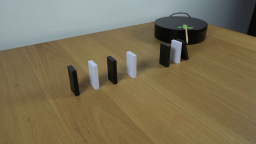
视觉工具实际返回图片 2
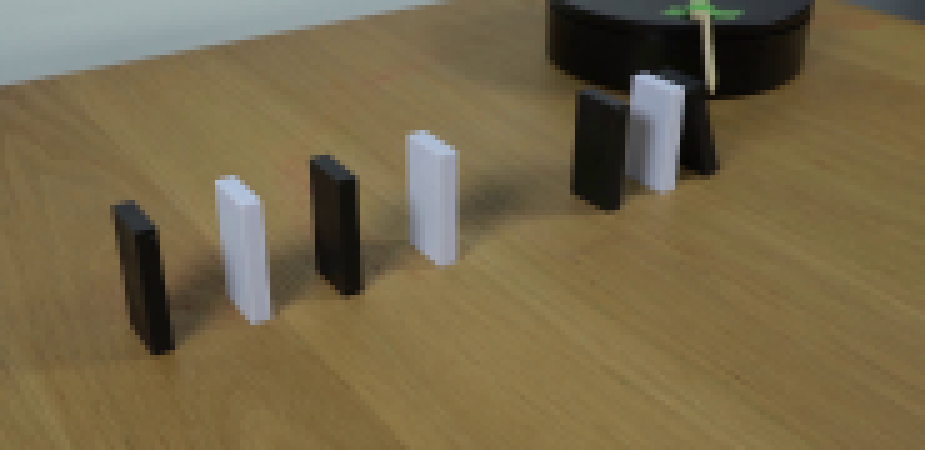
视觉工具实际返回图片 3
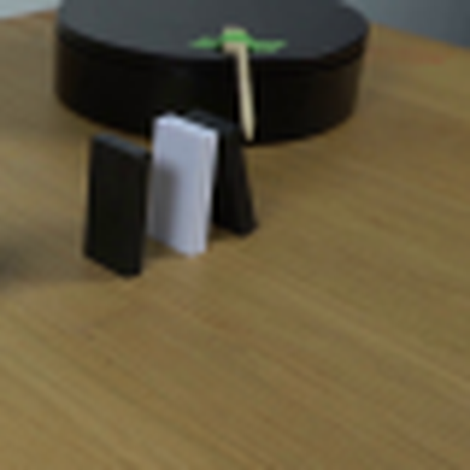
视觉工具实际返回图片 4
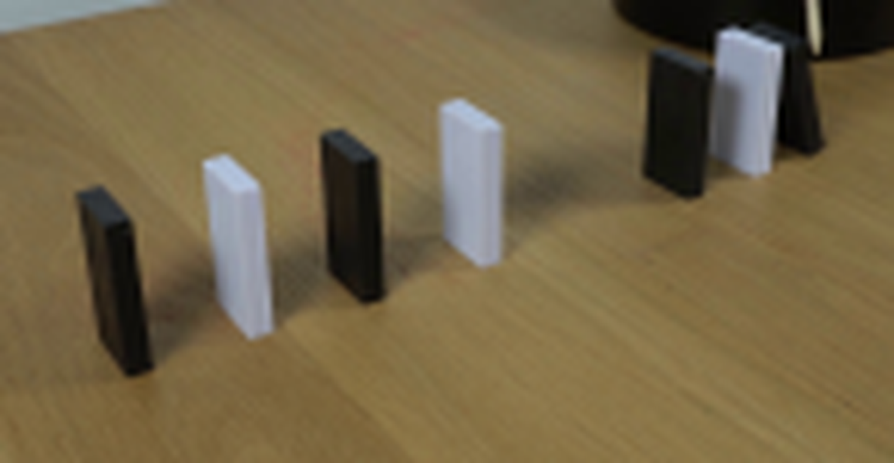
视觉工具实际返回图片 5
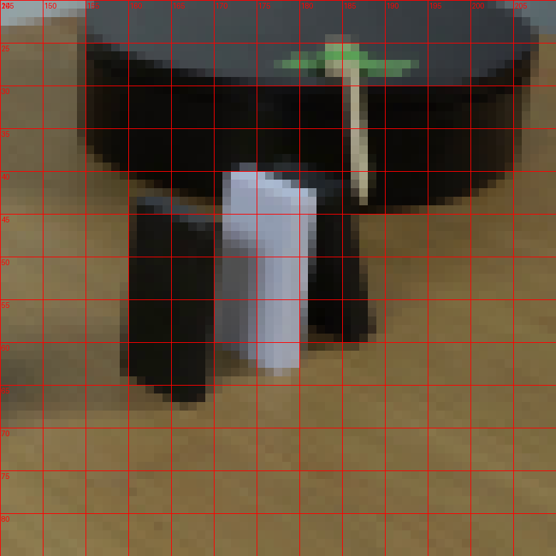
视觉工具实际返回图片 6
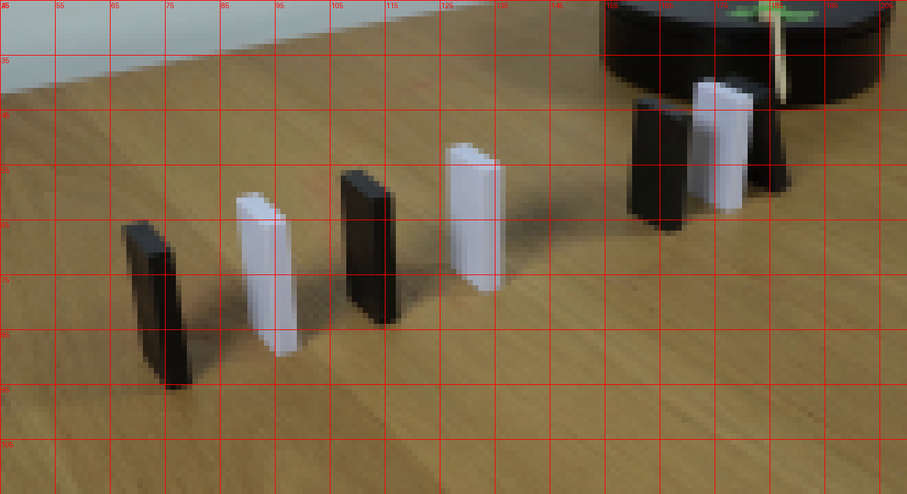
视觉工具实际返回图片 7
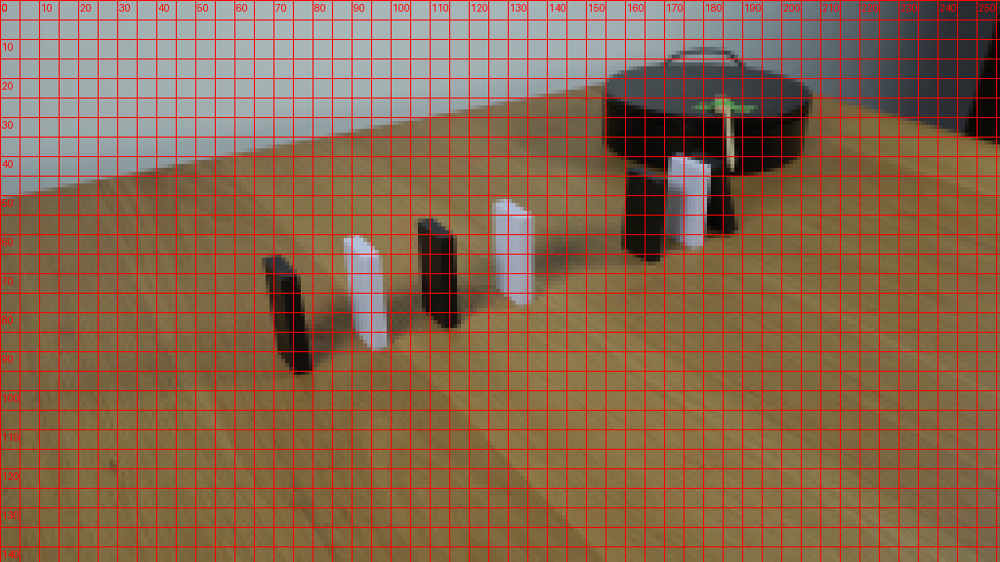
视觉工具实际返回图片 8
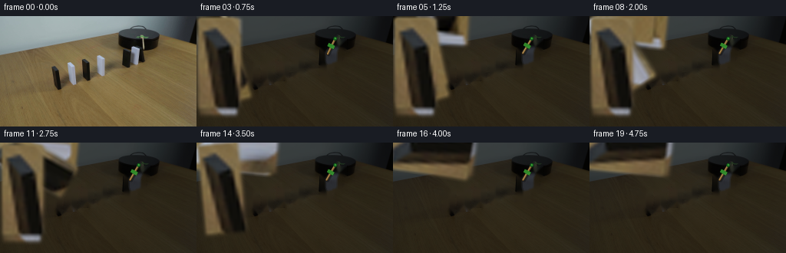
视觉工具实际返回图片 9
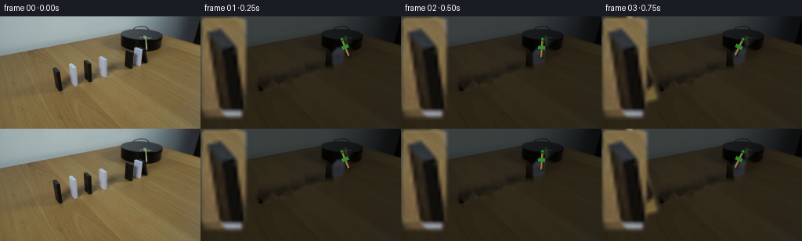
视觉工具实际返回图片 10
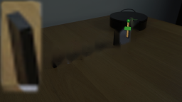
视觉工具实际返回图片 11
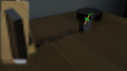
视觉工具实际返回图片 12
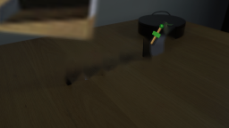
视觉工具实际返回图片 13
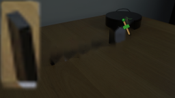
视觉工具实际返回图片 14
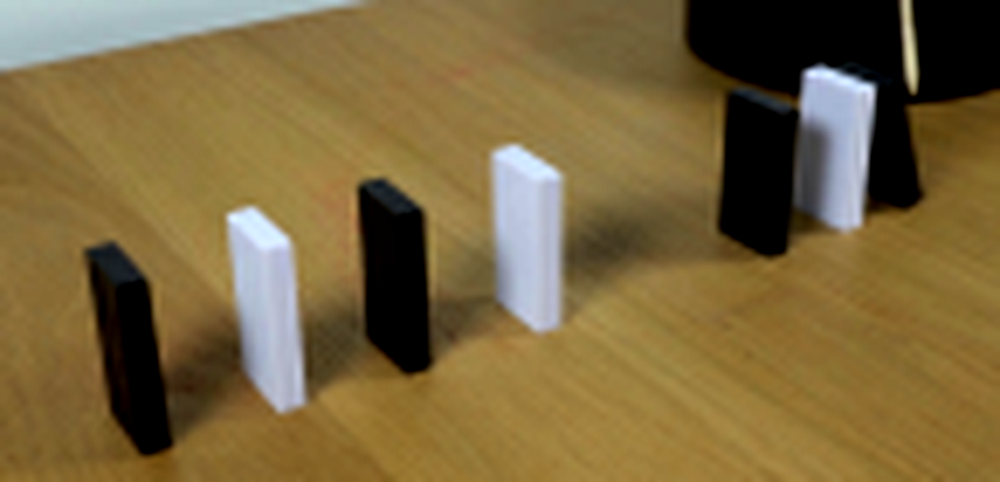
视觉工具实际返回图片 15
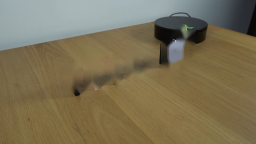
视觉工具实际返回图片 16
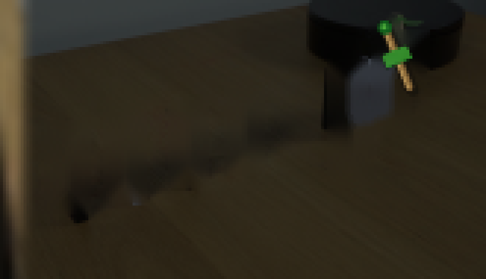
视觉工具实际返回图片 17
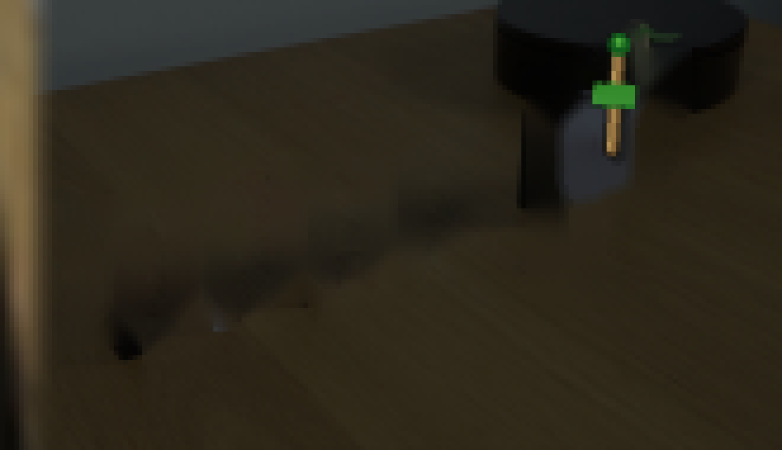
视觉工具实际返回图片 18
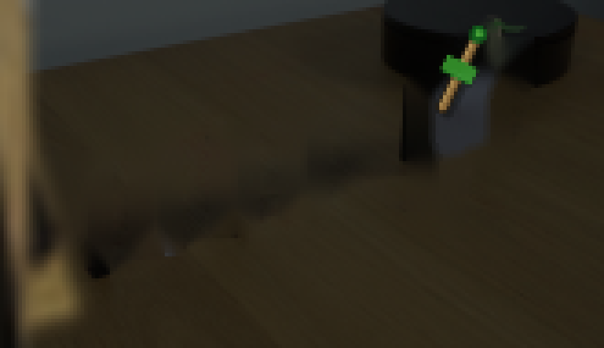
视觉工具实际返回图片 19
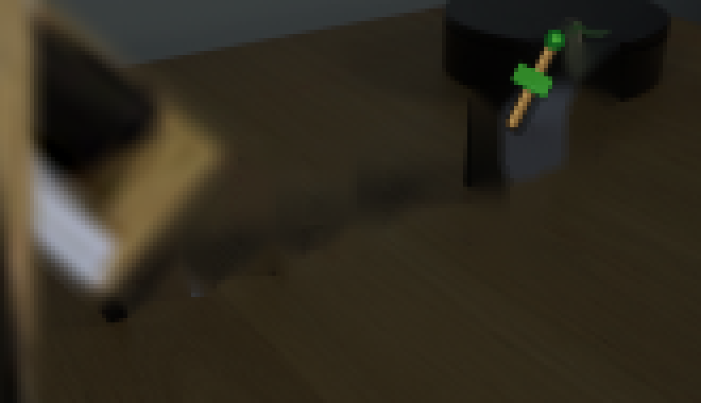
视觉工具实际返回图片 20
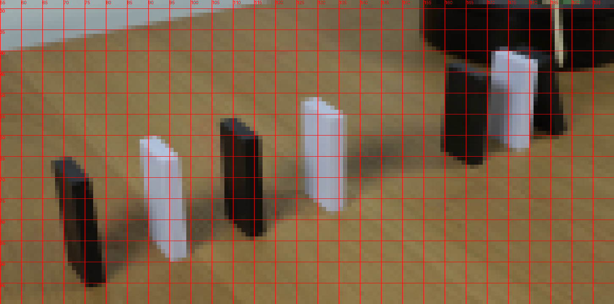
保存候选 1 份；完成命令 23 次；可验证图片返回 20 张。原始 API 响应与完整日志保留在本地。